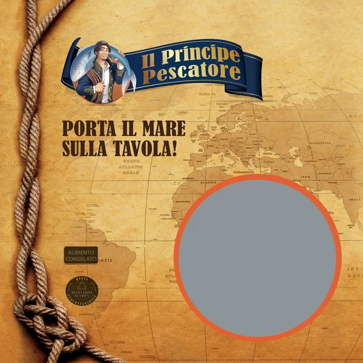

Porta il mare sulla tavola!
Pesce surgelato in busta, già pulito e porzionato, per la spesa di tutti i giorni. Sei referenze per il banco surgelati, dal salmone Keta alle cozze cilene.
Il viaggio del Principe
Il Principe parte dall'Italia e fa il giro del mondo: in ogni mare prende un pesce della gamma. Scorri e seguilo lungo la rotta.
-
Tappa 1 di 5 · Atlantico del Sud

foto prodottoFiletti di naselloFiletti di nasello
Filetti dal gusto delicato, da fare al forno con un filo d'olio oppure impanati.
Zona di pesca da confermare
-
Tappa 2 di 5 · Cile
foto prodottoCozze cileneCozze cilene sgusciate e a mezzo guscio
Già pulite: sgusciate per sughi, risotti e zuppe di mare, a mezzo guscio da gratinare al forno.
Referenze da confermare
-
Tappa 3 di 5 · Pacifico del Nord
foto prodottoFette di salmone KetaFette di salmone Keta
Salmone del Pacifico in fette, da cuocere in padella in pochi minuti o da aggiungere alla pasta.
-
Tappa 4 di 5 · Oceano Indiano
foto prodottoTranci di pesce spadaTranci di pesce spada
Tranci già puliti, senza pelle da togliere. Vanno bene sulla griglia, in padella o al forno.
Zona di pesca da confermare
-
Tappa 5 di 5 · Ritorno a casa
foto prodottoFiletti di trota irideaFiletti di trota iridea
Filetti di trota d'allevamento, buoni al cartoccio o in padella con burro e salvia.
Zona di allevamento da confermare
La zona di pesca o il paese di allevamento sono scritti su ogni busta.
Pronti in 5 minuti
La gamma in busta
Sei referenze nello stesso formato in busta. A scaffale si riconoscono dal nastro blu e dal cerchio corallo con la foto del prodotto.
-
foto prodottoFette di salmone Keta
Fette di salmone Keta
- Formato
- Busta 000 g
- Pronto in
- 00 min
Salmone del Pacifico in fette, da cuocere in padella in pochi minuti o da aggiungere alla pasta.
-
foto prodottoTranci di pesce spada
Tranci di pesce spada
- Formato
- Busta 000 g
- Pronto in
- 00 min
Tranci già puliti, senza pelle da togliere. Vanno bene sulla griglia, in padella o al forno.
-
foto prodottoFiletti di nasello
Filetti di nasello
- Formato
- Busta 000 g
- Pronto in
- 00 min
Filetti dal gusto delicato, da fare al forno con un filo d'olio oppure impanati.
-
foto prodottoFiletti di trota iridea
Filetti di trota iridea
- Formato
- Busta 000 g
- Pronto in
- 00 min
Filetti di trota d'allevamento, buoni al cartoccio o in padella con burro e salvia.
-
foto prodottoCozze cilene sgusciateDa confermare
Cozze cilene sgusciate
- Formato
- Busta 000 g
- Pronto in
- 00 min
Cozze già pulite e sgusciate, pronte per sughi, risotti e zuppe di mare.
-
foto prodottoCozze cilene a mezzo guscioDa confermare
Cozze cilene a mezzo guscio
- Formato
- Busta 000 g
- Pronto in
- 00 min
Cozze a mezzo guscio da gratinare al forno o da aggiungere agli spaghetti.
Dal freezer alla tavola
Il pesce esce dalla busta già pulito e porzionato. Nessun passaggio complicato.
-
Apri la busta
Prendi le porzioni che ti servono e rimetti il resto in freezer.
0 min -
In padella o al forno
Ogni referenza ha i suoi tempi di cottura, scritti sul retro della busta.
00 min -
In tavola
Un filo d'olio, una fetta di limone e il contorno che c'è in casa.
Pronto
Dove trovarlo
Nel reparto surgelati del supermercato, insieme al pesce. Le buste sono color pergamena e si riconoscono da lontano.
-
Il Principe sul nastro blu
In alto a sinistra, con il nome scritto in oro.
-
«Porta il mare sulla tavola!»
Il claim in grande, sopra la mappa.
-
Il cerchio corallo
Dentro c'è la foto del pesce che stai comprando.
Per la distribuzione
Principe Pescatore è la linea di Comavicla per la spesa di tutti i giorni. Se lavori per un'insegna e vuoi portarla nel tuo banco surgelati, scarica il brand profile o scrivi al referente commerciale.
Ci trovi a Marca Bologna 2027, padiglione 00, stand 00.